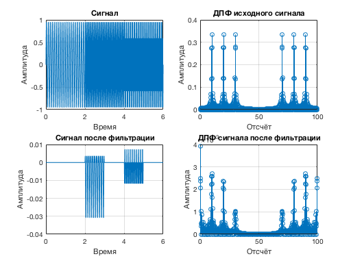

clear;
fs=100;
t=0:1/fs:6;
N=600;
f = zeros(1,N);
for i = 1 : N
f(i) = (i-1)*fs/N;
end
f1=10;
f2=20;
f3=30;
t1=0:1/fs:2;
A(1:length(t1))=sin(2*f1*pi*t1);
t2=(2+1/fs):1/fs:4;
A(length(t1)+1:length(t1)+length(t2))=sin(2*f2*pi*t2);
t3=(4+1/fs):1/fs:6;
A((length(t1)+length(t2)+1):(length(t1)+length(t2)+length(t3)))=sin(2*f3*pi*t3);
subplot (2,2,1);
plot(t,A); grid on; xlabel('Время'); ylabel('Амплитуда'); title('Сигнал');
subplot (2,2,2);
stem(f,2*abs(fft(A,N))/N); grid on; xlabel('Отсчёт'); ylabel('Амплитуда'); title('ДПФ исходного сигнала');
koef=100;
tvS=koef/fs:1/fs:6;
S=zeros(1,length(t));
for j=koef:1:length(t)
for i = j-koef+1:1:j
S(j)=S(j)+A(i);
end
S(j)=S(j)/koef;
end
subplot (2,2,3);
plot(t,S); grid on; xlabel('Время'); ylabel('Амплитуда'); title('Сигнал после фильтрации');
subplot (2,2,4);
stem(f,2*abs(fft(S,N))/N); grid on; xlabel('Отсчёт'); ylabel('Амплитуда'); title('ДПФ сигнала после фильтрации');
